I use strategic design to innovate and solve problems.

Hi, my name is Ramotse "Ramo" Phalatse. Over the past 18+ years I've relied on a blend of creative vision, collaboration and entrepreneurial resourcefulness to solve problems for businesses and the people they serve.
I prioritise empathy and a learn-by-doing approach. This has led me to leadership roles across geographies, from co-founding a design studio serving multinational clients in South East Asia, Europe and Australia to accountability for strategic design initiatives at one of South Africa's largest banks.
I believe that design has a place in the boardroom, but that place must be earned by demonstrating the business impact of design.
Professional Experience
2018 - Present
Nedbank
- 2021: Head of Design Strategy. Manage a strategic design function across four disciplines (Design Research, Business Design, Service Design and Strategy). Support the Executive Head of Design in driving prioritised initiatives, advocating for client centricity with Executive stakeholders and maturing Nedbank's design practice from an established team of ±20 designers in late 2018 to a differentiated team of 180+ designers in 2023.
- 2019: Promoted to Head of CX Design, overseeing Design Research and our Client Experience/Service Design capabilities. Design Chapter Lead and part of founding team for Avo, Nedbank's first "beyond banking" E-commerce platform.
- 2018: Joined Nedbank as Design Research Lead, fostering best practices and driving insights-led innovation. Established a centralised research practice supporting insights-led innovation across Nedbank
2006 - 2018
Tenaka
- 2013: Acquired shareholding and became a co-owner, formulating business strategies and interfacing with key clients, partner organisations and the board of directors.
- 2010: Transitioned to Director of Consulting Services, driving strategic initiatives and mentoring high potential team members.
- 2006: Joined the agency as a Web Designer, rapidly progressing to Studio Director in 2008 (led the creative studio with emphasis on team culture and productivity).
2004 - 2007
Ram Media Sdn. Bhd.
- 2005: Moved operations from Kuala Lumpur to Sydney, Australia before moving back to South Africa in late 2006.
- 2004: Co-founded a Digital Design studio post-graduation. Catered to high-end office furniture manufacturers, key clients were Wilkhahn and Haworth.
A few examples of projects I’ve led or directly supported over the past 12-18 months. The examples provided aim to demonstrate the diverse ways that I, and the team I am responsible for, drive impact and add value to our organisation.
01
Design Maturity Model
Created a current and future state view of design maturity at Nedbank. View project detail
02
Design Toolkit
Conceptualised and launched a set of tools to equip agile teams with human-centred design methods. View project detail
03
DigiSkills
A pilot to create sustainable livelihoods in partnership with Microsoft and Afrika Tikkun Services.View project detail
Education
2022
Global MBA in Digital Transformation
Zigurat & Technology Business School – Barcelona, Spain
Zigurat's Global MBA in Digital Transformation focuses on mastery and implementation of effective digital transformation strategies. Based on real-life case studies and guided by insights from faculty who are experienced executives, this program enables students to apply problem-solving strategies, consider risk mitigation and improve productivity in their organisations.
I completed my course with a Final Master Thesis grade of 81%
2003
Advanced Diploma: Interactive Multimedia & Design
Limkokwing University of Creative Technology – Kuala Lumpur, Malaysia
Graduated from LUCT’s Interactive Multimedia & Design undergrad program in 2003. In 2009, my alma mater invited me to interview for a series of feature articles profiling successful alumni which is available to view at: www.limkokwing.net/malaysia/community/alumni/ramo_phalatsi
1998 – 2001
National Higher Diploma: Graphic Design
Limkokwing University of Creative Technology – Kuala Lumpur, Malaysia
I studied Graphic Design at Nelson Mandela University, in Port Elizabeth, South Africa from 1998 - 2001 but did not complete my programme.
1997
Matriculation (High School Graduation)
Michaelhouse – Balgowan, South Africa
Michaelhouse is a school grounded in rich history and strong traditions. The school emphasises a holistic approach to education, rather than focusing solely on academics, sports, or culture. Their ethos is dedicated to creating "men of understanding, thought, and culture.
Notable achievements:
- Appointed as a house prefect (leader) for Mackenzie House
- 1st team (AKA varsity team / A-team): Basketball
- 2nd team: Hockey
Get in Touch.
Write: me@ramo.one | Connect: LinkedIn | Call: +27 84 700 4449